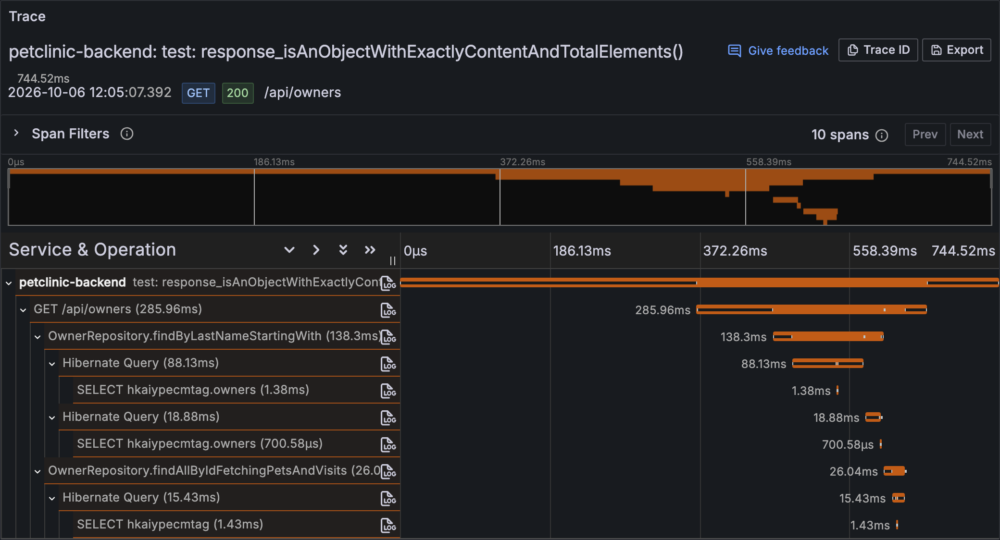
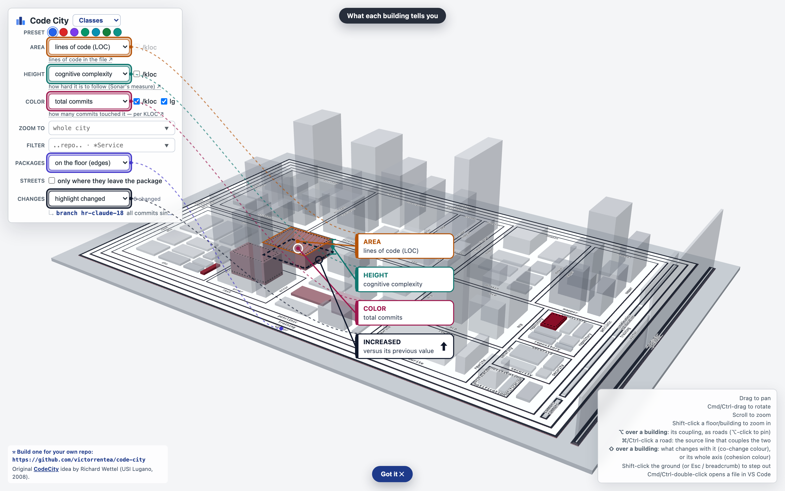
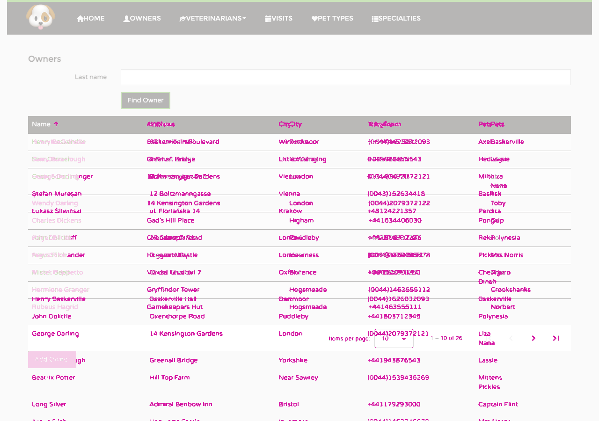
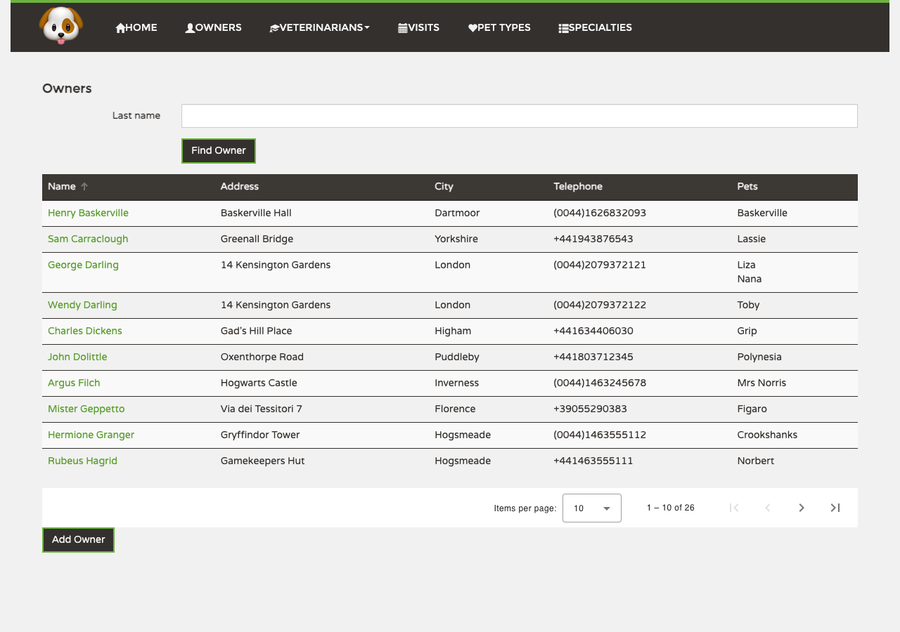
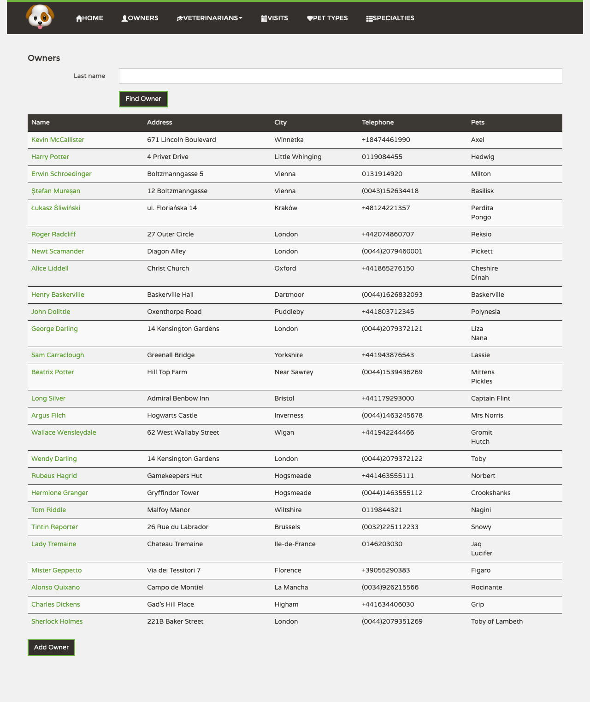

3 earlier commits outside the review
12da3c11Deployment diagram: SMS gateway is drawn and checked; labels say only what the test checks7ec3dfa5Asta este părerea comunității despre un workflow agentic. Dacă timp de șase luni n-ai modificat nicio linie din aceste markdown-uri, nu-ți meriți mărire.cbac9186AGENTS.md: list every module, move Java style to .github/instructions, add volumetry; Q&A for owners paging; e2e for year-0009 visit date
The spec this change was built against (openspec/changes/paginate-sort-owners/), before the reviewed range — not unreviewed code
b12c9bdbDocument owners pagination plan and product-friendly proposals
Already on origin/main (cherry-picked)
95302504human-review.json: the deployment drawing goes under the C2, checked against the traceseb6a0d1fSequence footer: a test traced via GENSEQ_SELECT no longer claims the tag98cb82a7Sequence step: trace the tests a branch wrote, untagged (GENSEQ_SELECT)f2d2edfdTraced instance: notify through it from the host JVM, and no NoTestsDiscovered5a97353ehuman-review.json: the video app resets its DB through /__reset96f925e2/human-review: the Sequence step traces on an instance of its own3a3dca19start-docker.sh up --otel: a traced instance with a Tempo of its own
This one costs money.
AI redoes the requirements↔tests map — about $5–$10 on Sonnet. The current map is replaced.
The plain ↺ is free.
Review
7 implementation assumptions · 13 open review issues · 5 auto-fixed
Round I · while coding
Implementation assumptions
Where the ticket was ambiguous: the reading the coder chose.
- assumption50% confident Empty size=, sort=, page= fall back to the defaults
Read the other way: reject blank values with 400
Why 50%: Spring's defaultValue treats a blank value as missing, and the spec lists only explicit bad values. Nothing in the ticket or Q&A decides blanks either way.
+112@RequestParam(name = "page", defaultValue = "0") @Schema(minimum = "0") int page, +113@Parameter(description = "Owners per page") +114@RequestParam(name = "size", defaultValue = "10") @Schema(allowableValues = {"5", "10", "20"}) int size, +115@Parameter(description = "name: by last name, first name, id; city: by city, then as name." +116 + " The direction applies to every field.") +117@RequestParam(name = "sort", defaultValue = "name,asc") - assumption60% confident A type mismatch on any endpoint answers 400, not 500
Read the other way: parse page/size as strings inside listOwners only
Why 60%: The catch-all advice turned Spring's natural 400 into a 500, and the contract already lists 400 for every operation. Held down because the spec says other owner contracts stay unchanged.
+85@ExceptionHandler(MethodArgumentTypeMismatchException.class) +86public ResponseEntity<ProblemDetail> handleTypeMismatch(MethodArgumentTypeMismatchException ex, +87 HttpServletRequest request) { +88 // The rejected value is caller input: echoed into the log or the body, it could forge lines or flood +89 String detail = "Invalid value for parameter '" + ex.getName() + "'"; +90 log.warn("Validation failed: {}", detail); +91 return ResponseEntity.badRequest() +92 .body(buildProblemDetail("Validation Error", detail, HttpStatus.BAD_REQUEST, request)); +93} - assumption60% confident On a failed load the last loaded page stays, with its controls
Read the other way: clear the rows and keep the failing page's controls
Why 60%: Keeps rows, paginator and sort header consistent beside the error, and clicking again retries. The spec only asks for an explicit error, not what happens to the rows.
+117if (this.shown) { +118 Object.assign(this, this.shown); +119} - assumption75% confident A page whose offset overflows an int is a 400
Read the other way: accept it and answer an empty page beyond the last
Why 75%: Hibernate takes an int first-result, so the offset would wrap silently. The spec's "unrepresentable page numbers" is read as covering this.
32if (page < 0 || (long) page * size > Integer.MAX_VALUE) { 33 throw new ValidationException("Page must be between 0 and " + Integer.MAX_VALUE / size + ", got " + page); 34} - assumption75% confident The last-name prefix is submitted untrimmed
Read the other way: trim whitespace before submitting the search
Why 75%: The old screen sent the text as typed, and the spec says preserve filtering semantics. A trailing space now matches nothing, as before.
+58this.submittedLastName = this.lastName ?? ''; - assumption80% confident Commas stay unescaped in query values
Read the other way: strict encodeURIComponent, sending sort=name%2Casc
Why 80%: A comma is a legal sub-delimiter in a query, and keeping it keeps sort=name,asc readable in diagrams. Every other reserved character is encoded.
+13encodeValue = (value: string) => encodeURIComponent(value).replace(/%2C/g, ','); - assumption85% confident Every list request sends all four parameters explicitly
Read the other way: omit parameters equal to the server defaults
Why 85%: The grid's state is always complete, and an explicit URL makes traces and tests unambiguous. Defaults stay usable for other clients.
+95lastName: this.submittedLastName, +96page: this.pageIndex, +97size: this.pageSize, +98sort: `${this.sortKey},${this.sortDirection}` as OwnerSort
Round II · code review
Open review issues
Left in the code, each with its reason. They stay open until you agree or disagree.
- worth a lookticket-fit reviewer Task 4.4 not done: no comment on #25, Bizu not told
Reviewer: the narrowed Name/City scope and the breaking envelope are never communicated on #25.
publishing on GitHub waits for the human to approve the drafted comment.
31- [ ] 4.4 Comment on #25 with the verified implementation state, breaking coordinated rollout, and Name/City-only sorting; notify Bizu through the available issue channel without guessing an identity. Verify the published update is accurate and references the narrower accepted scope. - worth a lookticket-fit reviewer Global handler turns every controller's type-mismatch 500 into 400
Reviewer:
/api/owners/abc,/api/pets/abcnow answer 400 instead of 500, beyond the owner list.deliberate, recorded under Assumptions; openapi.yaml already documents 400 everywhere.
+85@ExceptionHandler(MethodArgumentTypeMismatchException.class) - worth a lookcorrectness and tests reviewers Owner deleted between page query and graph fetch makes the list 500
Reviewer: a concurrent delete between the two SELECTs misses the map lookup and throws IllegalStateException; no test covers the race.
openspec/changes/paginate-sort-owners/design.md:44↗ says surface a missing owner, never drop it.
+134return ids.stream() +135 .map(id -> Optional.ofNullable(fetchedById.get(id)) +136 .orElseThrow(() -> new IllegalStateException("Owner " + id + " vanished while listing"))) +137 .toList(); - worth a looktests reviewer Index tests check existence, not that queries use them
Reviewer: no EXPLAIN proves the bound-parameter LIKE plus ORDER BY uses the indexes; 100k behaviour is unproven.
plan and volume measurement deferred by openspec/changes/paginate-sort-owners/design.md:60↗.
53assertThat(ownerIndexDefinitions(schema)) 54 .anyMatch(index -> index.contains("owners_last_name_pattern_idx") 55 && index.contains("(last_name text_pattern_ops)")) 56 .anyMatch(index -> index.contains("owners_name_order_idx") 57 && index.contains("(last_name, first_name, id)")) 58 .anyMatch(index -> index.contains("owners_city_order_idx") 59 && index.contains("(city, last_name, first_name, id)")); - nitsecurity reviewer lastName has no server-side length cap
Reviewer: the 80-character limit exists only in the frontend input; a multi-KB prefix reaches both queries.
unchanged pre-existing behaviour; Tomcat already caps the request line at 8 KB.
+110@RequestParam(name = "lastName", defaultValue = "") String lastName, +111@Parameter(description = "Zero-based page index") - nitticket-fit reviewer Add Owner now always rendered, outside the table
Reviewer: the button used to appear only after data arrived; it now shows while loading and on error.
openspec/changes/paginate-sort-owners/design.md:74↗ requires Add Owner across loading/empty/error layouts.
+62<button id="addOwner" class="btn btn-default" (click)="addOwner()">Add Owner</button> - nitticket-fit reviewer Hand-rolled query codec, getOwners/searchOwners removed
Reviewer: the custom encoder and the deleted public methods widen the frontend change beyond the ticket.
default codec sends '+' raw; openspec/changes/paginate-sort-owners/design.md:68↗ asks one query path.
+13encodeValue = (value: string) => encodeURIComponent(value).replace(/%2C/g, ','); - nittests reviewer Latency proxy test now needs exactly 10 owners and was never run
Reviewer:
hasSize(10)ties the load test to the default page size, and nothing executed it.10 is the specified default; not running it is openspec/changes/paginate-sort-owners/tasks.md:15↗.
55mockMvc.perform(get("/api/owners")) 56 .andExpect(status().isOk()) +57 .andExpect(jsonPath("$.content", hasSize(10))) +58 .andExpect(jsonPath("$.totalElements", greaterThanOrEqualTo(10))); - nittests reviewer City-sort test orders with Java compareTo, not DB collation
Reviewer:
isSortedAccordingTo(String::compareTo)assumes Java and Postgres agree on the seeded cities.seeded cities differ in their first letters; any collation agrees. Paging test uses ASCII.
165assertThat(cities).isSortedAccordingTo(String::compareTo); - nitCI (SonarCloud) Sonar: duplicated literal "Validation failed: {}"
CI: the log pattern now appears four times in the advice.
three pre-existed; a constant for a log pattern reads worse.
+90log.warn("Validation failed: {}", detail); - contextsecurity reviewer Deep page offsets as an unauthenticated DoS through huge OFFSET scans
Reviewer:
page=100000000&size=20passes validation and was claimed to make Postgres walk ~2 billion index entries.OFFSET past the last row stops at table end; costs no more than the count.
32if (page < 0 || (long) page * size > Integer.MAX_VALUE) { 33 throw new ValidationException("Page must be between 0 and " + Integer.MAX_VALUE / size + ", got " + page); 34} - contextcorrectness reviewer A failed first load leaves nothing to retry
Reviewer: initial GET fails, so there is an error banner, an empty table and no paginator.
Find Owner resubmits the query; it is the retry.
+117if (this.shown) { +118 Object.assign(this, this.shown); +119} - contextCI (SonarCloud) Sonar: prefer String#replaceAll
CI:
replace(/%2C/g, ',')could bereplaceAll.tsconfig lib is es2017; replaceAll does not typecheck.
+13encodeValue = (value: string) => encodeURIComponent(value).replace(/%2C/g, ',');
Round III · fixing the review
Auto-fixed
Fixed by the review in the fix commit 44c8da18. Diffs against d8682386, the implementation commit.
- fixedcorrectness, tests and ticket-fit reviewers A failed page load left paginator and sort describing an unloaded page
Reviewer:
fail()cleared the rows but kept the new pageIndex/sort and the old total, so after a failed Next the paginator read "11 – 20 of 26" over an empty table.export class OwnerListComponent implements OnInit, OnDestroy { 93 103 } 94 104 95 105 private show(page: OwnerPage) { 106 + this.shown = this.listState(); 96 107 this.owners = page.content; 97 108 this.totalElements = page.totalElements; 98 109 this.errorMessage = null; export class OwnerListComponent implements OnInit, OnDestroy { 100 111 this.loading = false; 101 112 } 102 113 114 + // The last page that did load stays on screen, and the paginator and sort header go back to 115 + // describing it: left on the page that failed, they would claim rows the table does not hold. 103 116 private fail(error: unknown) { 104 - this.owners = []; 117 + if (this.shown) { 118 + Object.assign(this, this.shown); 119 + } 105 120 this.errorMessage = String(error); 106 121 this.loading = false; 107 122 } 123 + 124 + private listState(): ListState { 125 + const {submittedLastName, pageIndex, pageSize, sortKey, sortDirection} = this; 126 + return {submittedLastName, pageIndex, pageSize, sortKey, sortDirection}; 127 + } 108 128 } describe('OwnerListComponent', () => { 253 253 254 254 expect(errorAlert().nativeElement.textContent).toContain('server returned code 500'); 255 255 expect(noOwnersMessage()).toBeNull(); 256 - expect(rows().length).toBe(0); 256 + expect(rows()).toHaveSize(0); 257 257 expect(addOwnerButton()).toBeTruthy(); 258 258 expect(component.loading).toBeFalse(); 259 259 }); 260 260 261 + it('a failed later page leaves the last loaded page, with its paginator and sort, on screen', async () => { 262 + const nextPage = new Subject<OwnerPage>(); 263 + getOwnerPage.and.returnValues(of(pageOf(10, 26)), nextPage); 264 + fixture.detectChanges(); 265 + const pager = await loader.getHarness(MatPaginatorHarness); 266 + 267 + await pager.goToNextPage(); 268 + nextPage.error('boom'); 269 + fixture.detectChanges(); 270 + 271 + expect(errorAlert()).toBeTruthy(); 272 + expect(rows()).toHaveSize(10); 273 + expect(await pager.getRangeLabel()).toBe('1 – 10 of 26'); 274 + expect(component.pageIndex).toBe(0); 275 + }); 276 + 261 277 it('a later success clears the error', () => { 262 278 getOwnerPage.and.returnValues(throwError('boom'), of(pageOf(3, 3))); 263 279 fixture.detectChanges(); Fix: remember the state of the last loaded page and restore it on failure, keeping its rows.
- fixedsecurity and correctness reviewers Type-mismatch 400 echoed raw caller input into the log and body
Reviewer:
?page=<CRLF or huge string>was written verbatim bylog.warnand reflected into ProblemDetail.detail, allowing forged log lines and log flooding.public class ExceptionControllerAdvice { 85 85 @ExceptionHandler(MethodArgumentTypeMismatchException.class) 86 86 public ResponseEntity<ProblemDetail> handleTypeMismatch(MethodArgumentTypeMismatchException ex, 87 87 HttpServletRequest request) { 88 - String detail = "Invalid value '" + ex.getValue() + "' for parameter '" + ex.getName() + "'"; 88 + // The rejected value is caller input: echoed into the log or the body, it could forge lines or flood 89 + String detail = "Invalid value for parameter '" + ex.getName() + "'"; 89 90 log.warn("Validation failed: {}", detail); 90 91 return ResponseEntity.badRequest() 91 92 .body(buildProblemDetail("Validation Error", detail, HttpStatus.BAD_REQUEST, request)); class OwnerListTest { 125 126 "sort=name,asc,city", "sort=NAME,asc", "sort=name,asc&sort=city,asc"}) 126 127 void invalidParameters_400(String query) throws Exception { 127 128 mockMvc.perform(get("/api/owners?" + query)) 128 - .andExpect(status().isBadRequest()); 129 + .andExpect(status().isBadRequest()) 130 + .andExpect(jsonPath("$.title").value("Validation Error")) 131 + .andExpect(jsonPath("$.detail").isNotEmpty()); 132 + } 133 + 134 + @Test 135 + void typeMismatch_doesNotEchoTheRejectedInput() throws Exception { 136 + mockMvc.perform(get("/api/owners").param("page", "x\r\nFORGED")) 137 + .andExpect(status().isBadRequest()) 138 + .andExpect(jsonPath("$.detail").value("Invalid value for parameter 'page'")); 129 139 } 130 140 131 141 @ParameterizedTest Fix: name only the parameter, never the rejected value.
- fixedtests reviewer Invalid-parameter tests asserted only the HTTP status
Reviewer: any 400, whatever its body, satisfied the test, so a regression in the ProblemDetail shape would pass unnoticed.
OwnerListTest.java: diff shown under Type-mismatch 400 echoed raw caller input into the log and body.Fix: assert the ProblemDetail title and a non-empty detail.
- fixedticket-fit reviewer release.md stated verifications without saying where they came from
Reviewer: the rollback compatibility check and the 3-SELECT budget were asserted with no test or command to back them.
envelope as an empty owner list. 20 20 Roll back **both** applications to the previous version together. Leave the database as it is: 21 21 22 22 - Keep V4 and its indexes. The previous backend validates against a database at V4, because Flyway 23 - ignores applied migrations newer than its own by default (`*:future`). Checked on 2026-10-03 by 24 - validating HEAD's V1-V3 + seed against a V4 database: successful. The indexes are invisible to 25 - the old queries and to `ddl-auto=validate`. 23 + ignores applied migrations newer than its own by default (`*:future`). A one-off check, not a 24 + test in this change: `Flyway.configure().locations(<eb6a0d1f's db/migration + db/seed>) 25 + .validateWithResult()` against a database migrated to V4 reported `validationSuccessful=true` 26 + (2026-10-03). The indexes are invisible to the old queries and to `ddl-auto=validate`. 26 27 - Never edit, rename or delete `V4__owner_list_indexes.sql` once a persistent environment has 27 28 applied it; a fix goes in V5. A changed V4 fails Flyway validation with a checksum mismatch. 28 29 This already happened locally: the shared dev database in this checkout had a different V4 from Roll back **both** applications to the previous version together. Leave the data 32 33 ## Not verified by this change 33 34 34 35 Response times with ~100,000 owners and under concurrent load are **unmeasured** (deferred for 35 -budget). Verified: the database pages before loading associations, and a full page costs at most 3 36 -SELECTs. `OwnerSearchThroughLatencyProxyTest` compiles against the new envelope with its original 37 -thresholds, but was not run. 36 +budget). Verified by `OwnerListPagingTest`: the database pages before loading associations, and a 37 +full page costs at most 3 SELECTs. `OwnerSearchThroughLatencyProxyTest` compiles against the new 38 +envelope with its original thresholds, but was not run. Fix: name OwnerListPagingTest, and describe the one-off Flyway validation as one-off.
- fixedCI (SonarCloud) Sonar: generic length assertions and mutable injected members
CI:
expect(x.length).toBe(n)reports badly on failure; constructor-injected services were not readonly.describe('OwnerListComponent', () => { 69 69 fixture.detectChanges(); 70 70 const pager = await loader.getHarness(MatPaginatorHarness); 71 71 72 - expect(rows().length).toBe(10); 72 + expect(rows()).toHaveSize(10); 73 73 expect(await pager.getRangeLabel()).toBe('1 – 10 of 26'); 74 74 expect(await pager.getPageSize()).toBe(10); 75 75 expect(component.pageSizes).toEqual([5, 10, 20]); describe('OwnerListComponent', () => { 218 218 it('leaving the screen cancels the outstanding request', () => { 219 219 fixture.destroy(); 220 220 221 - expect(latest.observers.length).toBe(0); 221 + expect(latest.observers).toHaveSize(0); 222 222 }); 223 223 }); 224 224 describe('OwnerListComponent', () => { 242 242 243 243 await pager.goToNextPage(); 244 244 245 - expect(rows().length).toBe(0); 245 + expect(rows()).toHaveSize(0); 246 246 expect(noOwnersMessage()).toBeNull(); 247 247 expect(await pager.isPreviousPageDisabled()).toBeFalse(); 248 248 }); export class OwnerListComponent implements OnInit, OnDestroy { 32 41 errorMessage: string | null = null; 33 42 34 43 private request?: Subscription; 44 + private shown?: ListState; 35 45 36 - constructor(private router: Router, private ownerService: OwnerService) { 46 + constructor(private readonly router: Router, private readonly ownerService: OwnerService) { 37 47 } 38 48 39 49 ngOnInit() { Fix:
toHaveSize, andprivate readonlyon the injected services.
Other changes in the fix commit: 3 hunks in 3 files
| package victor.training.petclinic.rest; | ||
| 2 | 2 | |
| 3 | 3 | import static org.assertj.core.api.Assertions.assertThat; |
| 4 | 4 | import static org.springframework.test.web.servlet.request.MockMvcRequestBuilders.get; |
| 5 | +import static org.springframework.test.web.servlet.result.MockMvcResultMatchers.jsonPath; | |
| 5 | 6 | import static org.springframework.test.web.servlet.result.MockMvcResultMatchers.status; |
| 6 | 7 | |
| 7 | 8 | import java.util.ArrayList; |
| describe('OwnerListComponent', () => { | ||
| 265 | 281 | submitSearch(''); |
| 266 | 282 | |
| 267 | 283 | expect(errorAlert()).toBeNull(); |
| 268 | - expect(rows().length).toBe(3); | |
| 284 | + expect(rows()).toHaveSize(3); | |
| 269 | 285 | expect(text()).not.toContain('boom'); |
| 270 | 286 | }); |
| 271 | 287 | }); |
| import {OwnerPage, OwnerPageSize, OwnerSort} from '../owner-page'; | ||
| 9 | 9 | |
| 10 | 10 | type OwnerSortKey = 'name' | 'city'; |
| 11 | 11 | |
| 12 | +/** What a list request asks for: the controls that produced the page on screen. */ | |
| 13 | +interface ListState { | |
| 14 | + submittedLastName: string; | |
| 15 | + pageIndex: number; | |
| 16 | + pageSize: OwnerPageSize; | |
| 17 | + sortKey: OwnerSortKey; | |
| 18 | + sortDirection: 'asc' | 'desc'; | |
| 19 | +} | |
| 20 | + | |
| 12 | 21 | @Component({ |
| 13 | 22 | selector: 'app-owner-list', |
| 14 | 23 | templateUrl: './owner-list.component.html', |
Demo
- 0:04The Owners grid loads one page from the server: 1 – 10 of 26, ten per page.
- 0:10Next fetches the following page: 11 – 20 of 26.
- 0:16Page size is 5, 10 or 20, and changing it restarts at page one: 1 – 5 of 26.
- 0:24Name sorts on the server, here descending, back on page one.
- 0:30City sorts the same way, ascending then descending.
- 0:34Searching by last name restarts paging over the matches: 1 – 2 of 2.
- 0:41When a page fails to load, an error shows and the paginator still reads 1 – 5 of 26, matching the rows.
- 0:54Add Owner stays available under the grid.
API
Data
Also changed, not drawn: indexes added on owners (city, last_name, first_name, id), owners (last_name text_pattern_ops), owners (last_name, first_name, id).

Tests
Issue #25: Add pagination to Owners grid
- The grid should be sortable by any column
- The grid should be paginated in pages of 5, 10, or 20 rows per page
Requirements of the OpenSpec change paginate-sort-owners
- Owner list page contract —
GET /api/ownersSHALL return HTTP 200 with exactlycontentandtotalElementsas its page-envelope fields.contentSHALL contain existing owner DTOs with their pets, pet types, and visits;totalElementsSHALL count all matching owners before pagination. - Paging inputs and bounds — The API SHALL use zero-based
pagewith default 0 andsizewith default 10. Valid page sizes SHALL be only 5, 10, and 20. Negative, non-integer, or unrepresentable page numbers and invalid sizes SHALL return HTTP 400 rather than being silently normalized. - Business-key sorting — The API SHALL accept only
sort=name,asc,name,desc,city,asc, orcity,desc, defaulting toname,ascwhen omitted. Name SHALL order by last name, first name, and owner ID; City SHALL order by city, last name, first name, and owner ID. The selected direction SHALL apply to every field in the chain. - Preserved last-name filtering — The API SHALL preserve case-sensitive literal last-name prefix filtering. An omitted or empty
lastNameSHALL match all owners. Pagination and sorting SHALL operate on the filtered set, withtotalElementsreflecting that set. - Bounded list data access — Owner listing SHALL retrieve owner rows only for the requested page and associations only for selected owners. A full non-empty page SHALL require at most three SQL SELECT statements, including counting, association loading, and response mapping, independent of the number of matching owners or pets.
- Owners grid navigation — The grid SHALL display a page of owners, offer page sizes 5/10/20, indicate the current range and total, and expose sorting controls only for Name and City. The initial grid state SHALL correspond to API defaults. Existing Bootstrap styling, owner-detail navigation, and Add Owner behavior SHALL remain available.
- Grid state transitions — A submitted search, page-size change, or sort change SHALL reset the page index to 0. Search SHALL preserve the active sort. Page and sort navigation SHALL use the submitted filter, not unsubmitted input edits. Page state SHALL remain local to the screen rather than being added to the URL.
- Latest request wins — Only the latest list request SHALL update the displayed rows, total, loading state, or error state. Leaving the screen SHALL cancel any outstanding list subscription.
- Empty results and failures are distinct — After a successful response with
totalElements=0, the grid SHALL show a no-owners message containing the submitted prefix and hide the paginator. Request failures SHALL display an explicit error rather than being presented as successful empty search results. - Unchanged authorization and owner operations — Existing owner-list authorization and all owner-detail, count, create, update, delete, nested pet/visit, and chatbot owner-detail/MCP contracts SHALL remain unchanged. All in-repository list consumers SHALL use the new page envelope.
Changed lines no test runs 0 — all 124 measurable changed lines ran in at least one test
Not measurable 73 changed lines
- OwnerRepository.java 15 no body of its own
- OwnerRepository.java 18–24 no body of its own
- ApiExamples.java 34–40, 42–43 declaration
- OwnerPageRequest.java 14, 19–20, 22–23, 44 declaration
- OwnerPageRequest.java 15, 18, 21 runs while the object is built
- OwnerPageRequest.java 25 constructor
- OwnerRestController.java 99, 102, 104–105, 108–118 declaration
- OwnerPageDto.java 7 constructor
- OwnerPageDto.java 8 runs while the object is built
- OwnerPageDto.java 9–12 declaration
- ExceptionControllerAdvice.java 85, 87 annotation
- V4__owner_list_indexes.sql 1–3, 5–6, 8, 10 SQL
- owner-list.component.html 28, 57 declarations
- owner-list.component.ts 10, 13–18, 43–44 types
- owner-page.ts 4, 8–10 types
- owner-list.component.html 23 template
+54 −9 ✍️7
new 54
- freshDatabase_hasTheOwnerListIndexes OwnerListIndexesMigrationTest.java:35
- databaseAlreadyAtV3_upgradesToTheOwnerListIndexes OwnerListIndexesMigrationTest.java:40
- traversingEveryPage_yieldsEachOwnerOnceInTheRequestedOrder OwnerListPagingTest.java:110
- everyOwnerOnAPageCarriesAllItsPetsTypesAndVisits OwnerListPagingTest.java:132
- aColdFullPage_costsAtMostThreeSelects_withPagingDoneByTheDatabase OwnerListPagingTest.java:148
- anEmptyPage_loadsNoPetsOrVisits OwnerListPagingTest.java:164
- defaultRequest_firstTenByNameAscending_withTotal OwnerListTest.java:46
- contentCarriesNestedPetsTypesAndVisits OwnerListTest.java:58
- ownersWithoutPetsAreListed OwnerListTest.java:69
- allowedSizes OwnerListTest.java:80
- secondPageOfFive_isPositionsSixToTen OwnerListTest.java:88
- lastPartialPage OwnerListTest.java:98
- pageBeyondTheLast_isEmptyWithActualTotal OwnerListTest.java:106
- noMatch_isEmptyWithZeroTotal OwnerListTest.java:114
- invalidParameters_400 OwnerListTest.java:127
- typeMismatch_doesNotEchoTheRejectedInput OwnerListTest.java:135
- allowedSorts OwnerListTest.java:143
- nameDescending_startsFromTheEndOfNameAscending OwnerListTest.java:150
- cityAscending_tiesByLastNameFirstName OwnerListTest.java:160
- prefixIsCaseSensitiveAndAnchoredToLastNameStart OwnerListTest.java:172
- emptyPrefix_matchesAll OwnerListTest.java:182
- filteredSecondPage_countsOnlyMatches OwnerListTest.java:187
- wildcardCharactersMatchLiterally OwnerListTest.java:199
- requests the first page of 10 by name ascending, once owner-list.component.spec.ts:62
- renders the page rows, the range and total, and sizes 5/10/20 owner-list.component.spec.ts:68
- offers sorting on Name and City only, starting with Name ascending owner-list.component.spec.ts:78
- keeps owner links and Add Owner owner-list.component.spec.ts:89
- next page keeps filter, size and sort owner-list.component.spec.ts:98
- previous page goes back one owner-list.component.spec.ts:107
- a page-size change restarts from page 0 owner-list.component.spec.ts:119
- a sort change restarts from page 0, and toggling never clears the sort owner-list.component.spec.ts:130
- sorts from the keyboard owner-list.component.spec.ts:147
- a search from a later page keeps the sort, restarts from page 0, and is sent once owner-list.component.spec.ts:157
- paging uses the submitted prefix, not the text typed since owner-list.component.spec.ts:169
- a late answer to an earlier request is ignored owner-list.component.spec.ts:193
- the earlier request cannot end the loading of the latest owner-list.component.spec.ts:203
- a late failure of an earlier request shows no error owner-list.component.spec.ts:210
- leaving the screen cancels the outstanding request owner-list.component.spec.ts:218
- zero matches: message with the submitted prefix, no paginator owner-list.component.spec.ts:226
- an empty page beyond a nonzero total keeps navigation and claims no "no matches" owner-list.component.spec.ts:238
- a failure shows an explicit error, not "no matches" owner-list.component.spec.ts:250
- a failed later page leaves the last loaded page, with its paginator and sort, on screen owner-list.component.spec.ts:261
- a later success clears the error owner-list.component.spec.ts:277
- getOwnerPage without a query relies on the server defaults owner.service.spec.ts:54
- getOwnerPage sends filter, page, size and sort owner.service.spec.ts:64
- getOwnerPage yields the page envelope, never a bare array owner.service.spec.ts:74
- getOwnerPage encodes every reserved character of the last-name prefix owner.service.spec.ts:85
- getOwnerPage sends an empty prefix, which matches every owner owner.service.spec.ts:93
- getOwnerPage propagates a failure instead of answering an empty page owner.service.spec.ts:99
- Searching with an empty last name lists the first page of every owner owner-search.feature:26
- Paging forward reaches every owner exactly once owner-search.feature:32
- Sorting by city, descending owner-search.feature:38
- Changing the page size returns to the first page owner-search.feature:43
- A new search returns to the first page and keeps the sort owner-search.feature:49
gone 9
- should create OwnerListComponent owner-list.component.spec.ts:89
- should call ngOnInit() method owner-list.component.spec.ts:93
- should show full name after getOwners observable (async) owner-list.component.spec.ts:99
- searchByLastName should call getOwners for empty term owner-list.component.spec.ts:109
- searchByLastName should call searchOwners for non-empty term owner-list.component.spec.ts:119
- a search is not overwritten by the initial load answering late owner-list.component.spec.ts:131
- should return expected owners (called once) owner.service.spec.ts:51
- search owners by last name prefix owner.service.spec.ts:134
- Searching with an empty last name lists every owner owner-search.feature:26
edited 7
- ownerSearchThroughProxy OwnerSearchThroughLatencyProxyTest.java:54
- addsAVisitToAnExistingPet AddVisitApiTest.java:75 edited via helper
- addOwner_created OwnerCreateTest.java:90
- getAll OwnerTest.java:131 edited via helper
- getAllWithAddressFilter OwnerTest.java:140 edited via helper
- getAllWithNameFilter_notFound OwnerTest.java:171 edited via helper
- Search owners by last name owners.feature:8
Sequence
Sequence diagrams of tests
How were these produced?
- The tests ran against the real app, with OpenTelemetry tracing switched on.
- Each HTTP call and database query was recorded as a span: who called whom, and for how long. The spans that one action set off form a trace.
- Each test's traces were drawn as its diagram below.
The trace of OwnerListTest: contentCarriesNestedPetsTypesAndVisits(), in Grafana Tempo. Compare it with that test's diagram below.

26 not traced, over the cap of 6
ownersWithoutPetsAreListedOwnerListTest.javaallowedSizesOwnerListTest.javasecondPageOfFive_isPositionsSixToTenOwnerListTest.javalastPartialPageOwnerListTest.javapageBeyondTheLast_isEmptyWithActualTotalOwnerListTest.javanoMatch_isEmptyWithZeroTotalOwnerListTest.javainvalidParameters_400OwnerListTest.javatypeMismatch_doesNotEchoTheRejectedInputOwnerListTest.javaallowedSortsOwnerListTest.javanameDescending_startsFromTheEndOfNameAscendingOwnerListTest.javacityAscending_tiesByLastNameFirstNameOwnerListTest.javaprefixIsCaseSensitiveAndAnchoredToLastNameStartOwnerListTest.javaemptyPrefix_matchesAllOwnerListTest.javafilteredSecondPage_countsOnlyMatchesOwnerListTest.javawildcardCharactersMatchLiterallyOwnerListTest.javatraversingEveryPage_yieldsEachOwnerOnceInTheRequestedOrderOwnerListPagingTest.javaeveryOwnerOnAPageCarriesAllItsPetsTypesAndVisitsOwnerListPagingTest.javaaColdFullPage_costsAtMostThreeSelects_withPagingDoneByTheDatabaseOwnerListPagingTest.javaanEmptyPage_loadsNoPetsOrVisitsOwnerListPagingTest.javagetAllOwnerTest.javagetAllWithAddressFilterOwnerTest.javagetAllWithNameFilter_notFoundOwnerTest.javafreshDatabase_hasTheOwnerListIndexesOwnerListIndexesMigrationTest.javadatabaseAlreadyAtV3_upgradesToTheOwnerListIndexesOwnerListIndexesMigrationTest.javaownerSearchThroughProxyOwnerSearchThroughLatencyProxyTest.javaaddOwner_createdOwnerCreateTest.java
27 in files no traced suite runs
- owners.feature ×1
- owner-list.component.spec.ts ×20
- owner.service.spec.ts ×6
API · JUnittagged · edited testAddVisitApiTest: adds a visit to an existing pet
72@GenerateSequence
73@Test
74@Order(1)
75void addsAVisitToAnExistingPet() throws Exception {
76 given("an owner with at least one pet exists");
77 JsonNode owner = anOwnerWithAPet();
78 int ownerId = owner.path("id").asInt();
79 int petId = owner.path("pets").get(0).path("id").asInt();
80
81 when("the owner detail page is opened");
82 call(mockMvc, get("/api/owners/{ownerId}", ownerId)).andExpect(status().isOk());
83
84 and("a visit is added for the first pet");
85 String description = "Annual check-up " + System.currentTimeMillis();
86 call(mockMvc, post("/api/owners/{ownerId}/pets/{petId}/visits", ownerId, petId)
87 .contentType(MediaType.APPLICATION_JSON)
88 .content(mapper.writeValueAsString(Map.of("date", VISIT_DATE, "description", description))))
89 .andExpect(status().isCreated());
90
91 then("the visit is listed under the pet");
92 JsonNode reloaded = json(call(mockMvc, get("/api/owners/{ownerId}", ownerId))
93 .andExpect(status().isOk()));
94 assertThat(reloaded.path("pets").get(0).path("visits").toString())
95 .contains(description)
96 .contains(VISIT_DATE);
97}API · JUnitnew testOwnerListTest: contentCarriesNestedPetsTypesAndVisits()
57@Test
58void contentCarriesNestedPetsTypesAndVisits() throws Exception {
59 JsonNode alice = list("/api/owners?lastName=Liddell").path("content").get(0);
60
61 assertThat(alice.path("pets")).hasSize(2);
62 JsonNode cheshire = alice.path("pets").get(0);
63 assertThat(cheshire.path("name").asText()).isEqualTo("Cheshire");
64 assertThat(cheshire.path("type").path("name").asText()).isEqualTo("cat");
65 assertThat(cheshire.path("visits")).hasSize(2);
66}API · JUnitnew testOwnerListTest: defaultRequest_firstTenByNameAscending_withTotal()
45@Test
46void defaultRequest_firstTenByNameAscending_withTotal() throws Exception {
47 JsonNode page = list("/api/owners");
48
49 assertThat(fieldNames(page)).containsExactlyInAnyOrder("content", "totalElements");
50 assertThat(page.path("totalElements").asLong()).isEqualTo(SEEDED_OWNERS);
51 assertThat(lastNames(page)).hasSize(10)
52 .containsExactly("Baskerville", "Carraclough", "Darling", "Darling", "Dickens",
53 "Dolittle", "Filch", "Geppetto", "Granger", "Hagrid");
54 assertThat(firstNames(page).subList(2, 4)).containsExactly("George", "Wendy");
55}UI · TypeScripttagged · touchedAdd a visit to an existing pet from the owner detail page
31test('Add a visit to an existing pet from the owner detail page',
32 {tag: [GENERATE_SEQUENCE_TAG]},
33 async ({page}) => {
34 const {ownerId} = await an_owner_with_at_least_one_pet_exists();
35
36 await open_owner_detail_page(page, ownerId);
37 await click_add_visit_for_first_pet(page, 'Add Visit');
38 const description = await fill_visit_date_and_unique_description(page, VISIT_DATE);
39 await submit_visit_form(page);
40
41 await expect_back_on_owner_detail_page(page, ownerId);
42 await expect_pet_visit_list_contains(page, VISIT_DATE, description);
43 });UI · Gherkinnew testA new search returns to the first page and keeps the sort
+49Scenario: A new search returns to the first page and keeps the sort
+50 When I open the owners page
+51 And I sort owners by "City" "ascending"
+52 And I go to the next page
+53 And I search owners for "Pot"
+54 Then these owners are listed in order: "Harry Potter, Beatrix Potter"
+55 And the range reads "1 – 2 of 2"UI · Gherkinnew testChanging the page size returns to the first page
+43Scenario: Changing the page size returns to the first page
+44 When I open the owners page
+45 And I go to the next page
+46 And I show 5 owners per page
+47 Then the range reads "1 – 5" of every ownerUI · Gherkinnew testPaging forward reaches every owner exactly once
+32Scenario: Paging forward reaches every owner exactly once
+33 When I open the owners page
+34 And I show 20 owners per page
+35 And I page forward to the last page
+36 Then every owner was listed exactly once, by nameUI · Gherkintagged · new testSearching with an empty last name lists the first page of every owner
25@generate_sequence
+26Scenario: Searching with an empty last name lists the first page of every owner
27 When I open the owners page
28 And I search owners for ""
+29 Then the first 10 owners by "name,asc" are listed in order
+30 And the range reads "1 – 10" of every ownerUI · Gherkinnew testSorting by city, descending
+38Scenario: Sorting by city, descending
+39 When I open the owners page
+40 And I sort owners by "City" "descending"
+41 Then the first 10 owners by "city,desc" are listed in orderStructure
Nothing on this tab changed on this branch. Shown for context.
Op counts compare only the 2 tests traced on both sides.

walked by a testno test walks it
Code City
Impact on code size, complexity, coupling, …

UX
1 of 19 screens changed · ⚠ +2 gaps — controls from outside the design system
⚠️ Owners (/owners) · +2 gaps

changed: matSort on Name, City · added: Owners pages

✗ matSort · ✗ mat-paginator

changed — nothing here to judge
| side | element | role | why | delta | churn | |
|---|---|---|---|---|---|---|
| gap | hr-claude-18 | matSort on Name, Citydiv#ownersTable> | sortable table header | not from the design system — matSort is an Angular Material sort directive, and the design system has no component for a sortable table headernew on this branch: added from outside the design system | changed | — |
| gap | hr-claude-18 | Owners pages…> | paginator | not from the design system — <mat-paginator> is an Angular Material paginator, and the design system has no component for a paginator; its “Items per page” control is a <mat-select>, not combonew on this branch: added from outside the design system | added | — |
1 control considered and deliberately not judged
- Last name
#lastName— roleinput[type=text], not covered
Complexity
Cognitive Complexity per Entry Point
Computed by traversing the syntax of the Java source files.
GET/api/owners↗+617
POST/api/users↗11
POST/api/owners/{ownerId}/pets/{petId}/visits↗5
GET/assistant↗5
POST/api/visits↗4
PUT/api/visits/{visitId}↗4
POST/api/owners/{ownerId}/pets↗3
GET/api/pettypes↗2
GET/history↗2
PUT/api/pets/{petId}↗1
DELETE/api/pettypes/{petTypeId}↗1
GET/api/specialties/feed↗1
ANY/↗0
Nothing counted: every method behind this entry point is straight-line code. Cognitive complexity charges for branching, loops and boolean runs, and there are none here.
POST/↗0
Nothing counted: every method behind this entry point is straight-line code. Cognitive complexity charges for branching, loops and boolean runs, and there are none here.
POST/api/owners↗0
Nothing counted: every method behind this entry point is straight-line code. Cognitive complexity charges for branching, loops and boolean runs, and there are none here.
GET/api/owners/count↗0
Nothing counted: every method behind this entry point is straight-line code. Cognitive complexity charges for branching, loops and boolean runs, and there are none here.
DELETE/api/owners/{ownerId}↗0
Nothing counted: every method behind this entry point is straight-line code. Cognitive complexity charges for branching, loops and boolean runs, and there are none here.
PUT/api/owners/{ownerId}↗0
Nothing counted: every method behind this entry point is straight-line code. Cognitive complexity charges for branching, loops and boolean runs, and there are none here.
PUT/api/owners/{ownerId}/pets/{petId}↗0
Nothing counted: every method behind this entry point is straight-line code. Cognitive complexity charges for branching, loops and boolean runs, and there are none here.
DELETE/api/pets/{petId}↗0
Nothing counted: every method behind this entry point is straight-line code. Cognitive complexity charges for branching, loops and boolean runs, and there are none here.
POST/api/pettypes↗0
Nothing counted: every method behind this entry point is straight-line code. Cognitive complexity charges for branching, loops and boolean runs, and there are none here.
GET/api/pettypes/{petTypeId}↗0
Nothing counted: every method behind this entry point is straight-line code. Cognitive complexity charges for branching, loops and boolean runs, and there are none here.
PUT/api/pettypes/{petTypeId}↗0
Nothing counted: every method behind this entry point is straight-line code. Cognitive complexity charges for branching, loops and boolean runs, and there are none here.
DELETE/api/specialties/{specialtyId}↗0
Nothing counted: every method behind this entry point is straight-line code. Cognitive complexity charges for branching, loops and boolean runs, and there are none here.
GET/api/specialties/{specialtyId}↗0
Nothing counted: every method behind this entry point is straight-line code. Cognitive complexity charges for branching, loops and boolean runs, and there are none here.
PUT/api/specialties/{specialtyId}↗0
Nothing counted: every method behind this entry point is straight-line code. Cognitive complexity charges for branching, loops and boolean runs, and there are none here.
DELETE/api/vets/{vetId}↗0
Nothing counted: every method behind this entry point is straight-line code. Cognitive complexity charges for branching, loops and boolean runs, and there are none here.
DELETE/api/visits/{visitId}↗0
Nothing counted: every method behind this entry point is straight-line code. Cognitive complexity charges for branching, loops and boolean runs, and there are none here.
GET/firefighter↗0
Nothing counted: every method behind this entry point is straight-line code. Cognitive complexity charges for branching, loops and boolean runs, and there are none here.
DELETE/history↗0
Nothing counted: every method behind this entry point is straight-line code. Cognitive complexity charges for branching, loops and boolean runs, and there are none here.
GET/model↗0
Nothing counted: every method behind this entry point is straight-line code. Cognitive complexity charges for branching, loops and boolean runs, and there are none here.
MCPcall_vet_ambulance↗6
if (context == null || !context.elicitEnabled()) {+1if (context == null || !context.elicitEnabled()) {+1if (elicit.action() != ElicitResult.Action.ACCEPT) {+1String address = input == null ? null : input.address();+1if (address == null || address.isBlank()) {+1if (address == null || address.isBlank()) {+1MCPLocalTools.sendEmail↗2
MCPcancel_visit↗2
MCPget_owner_profile↗1
JOBRagIngestion.poll↗17
Logging
Uses of common Java logging libraries
Found by syntax-aware search over Java sources
+89String detail = "Invalid value for parameter '" + ex.getName() + "'";
+90log.warn("Validation failed: {}", detail);CODEOWNERS
This PR must be approved by
as required by .github/CODEOWNERS
Cost
| component | cost | ||||||||||||||||||||||||||||||||||
|---|---|---|---|---|---|---|---|---|---|---|---|---|---|---|---|---|---|---|---|---|---|---|---|---|---|---|---|---|---|---|---|---|---|---|---|
ImplementationClaude Code 33e81a92 · the implementing session, fork → prepare · 3 Oct 12:21 → 23:19 | $11.16Opus 5.5 | ||||||||||||||||||||||||||||||||||
ReviewClaude Code 33e81a92 · the reviewers and their brief · 3 Oct 23:19 → 23:20 | $2.13Opus 5.5 · Sonnet 5.5 | ||||||||||||||||||||||||||||||||||
Auto-fixesClaude Code 33e81a92 · deciding and fixing · 3 Oct 23:20 → 23:36 | $2.57Opus 5.5 | ||||||||||||||||||||||||||||||||||
Claude Code 04dd1c2a · the /human-review run · 3 Oct 23:36 → 23:52 · $1.55claude -p on Sonnet 5.5 · requirements↔tests mapping (rerun-model.py) · 3 Oct 23:49 → 23:51 · $0.55took 15 min, of which model 5 min; plus 10 min of refreshes, no model | $2.10Opus 5.5 · Sonnet 5.5 | ||||||||||||||||||||||||||||||||||
| |||||||||||||||||||||||||||||||||||
| Total | $17.96 | ||||||||||||||||||||||||||||||||||